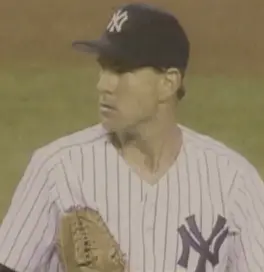

Bob MacDonald
Career Highlights & Facts
(Facts are AI-generated and may require verification)
- Pitched for the Seattle Pilots and Toronto Blue Jays in their inaugural seasons.
- Had an eight-year gap between major league appearances from 1969 to 1977.
- Was a member of the Seattle Pilots during the team's only season of existence.
Would you like to find out more about Bob MacDonald?
Career Totals
| WAR | W | L | ERA | G | GS | SV | IP | SO | WHIP |
|---|---|---|---|---|---|---|---|---|---|
| 1.2 | 8 | 9 | 4.34 | 197 | 0 | 3 | 234.1 | 142 | 1.455 |
Statistics via Baseball-Reference.com
The Original Clue